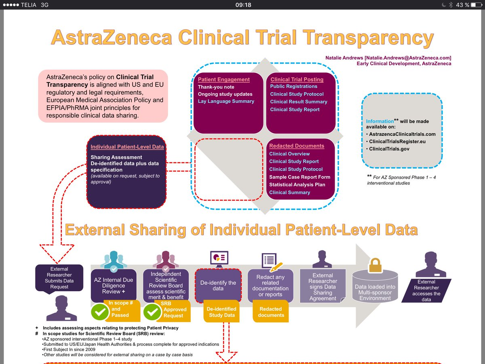
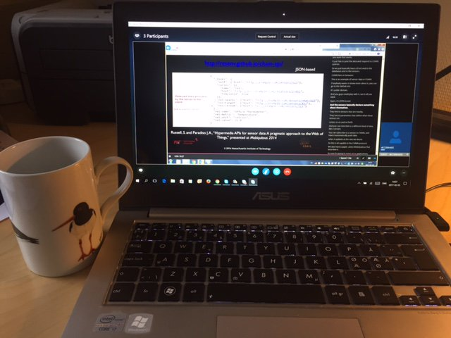
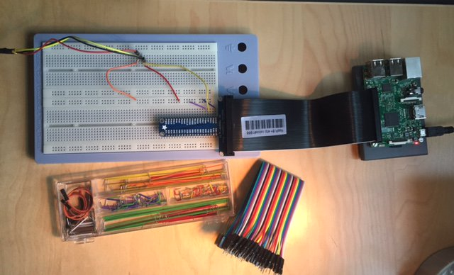

February 2017
The Clinical Trial of Tomorrow appliedclinicaltrialsonline.com/clinical-trial… interesting comment about #blockchain technology from @WayneKubick
Improving data transparency in clinical trials using blockchain smart contracts f1000research.com/articles/5-254…
Blockchain protocols in clinical trials: Transparency and traceability of consent f1000research.com/articles/6-66/…
Nice use of Twitter's Moments: ⚡️ “Clinical Trial Terms to Know” by @LillyTrials
twitter.com/i/moments/8338…
twitter.com/i/moments/8338…
Thinking of how #blockchain technology could change/improve #clinicaltrial #datasharing (illustration: lexjansen.com/phuse/2015/PP/…)

Time to summarise MIT's #Iot MOOC. One, of many interesting examples: Breath Monitoring of Multiple Individuals youtu.be/MH6vA1fkUgY
Five ideas from @JeniT in this great #odifridays #opendata presentation theodi.org/lunchtime-lect… [incl video] twitter.com/odihq/status/8…
Replacing Excel with Python, Pandas and Jupyter bit.ly/noda-pandas #NODA2017 presentation- Thank you for sharing @jplusplus_
Two @opentrials issues: Dedupl. trials via title github.com/opentrials/ope… Multiple CT.gov entries github.com/opentrials/ope…
Future homes will ambiently monitor breathing and heart rate #smarthealth example in MIT's #IoT MOOC wired.co.uk/article/smart-…
4 ⭐️ "use URIs to denote things [eg trials], so that people can point at your stuff" see my blog post kerfors.blogspot.se/2016/11/opentr… twitter.com/benmeg/status/…
To read and apply #pandorable: Modern Pandas blog serie by @TomAugspurger tomaugspurger.github.io/modern-1.html
Great event, organised by @NovasTaylor and @nomini Sorry I can't make it in the US. Hope for a new opportunity in EU later this year. twitter.com/NovasTaylor/st…
APIs Power the Internet of Things by @travisspencer and @jkriggins bit.ly/1AoQI2c #IoT via @nordicapis
Week 4 in MIT's #IoT MOOC, learning about #ChainAPI github.com/ResEnv/chain-a…, with our small home project RaspberryPi temp sensor on the desk


Comprehensive overview - I do need a couple of readings to get all of this. Ping @flandqvist @bBalsa twitter.com/wolands_cat/st…
Tarde’s idea of quantification Great to see an old favourite again Bruno Latour bruno-latour.fr/node/144
Great to see the short alpha-num IDs :-) and the Wikipedia URLs. @truve How about the @wikidata's URIs? eg wikidata.org/entity/Q42 twitter.com/kerfors/status…